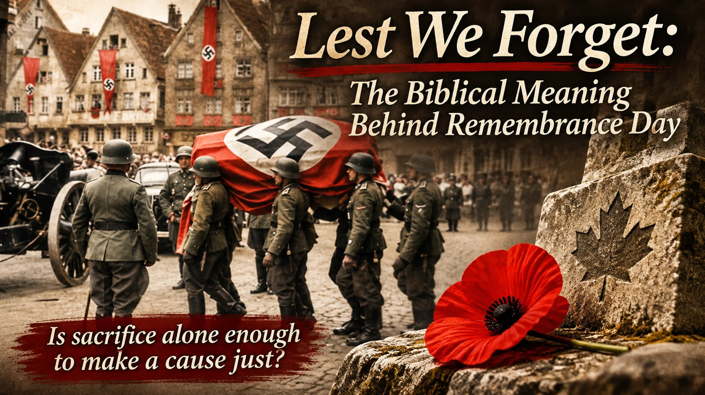
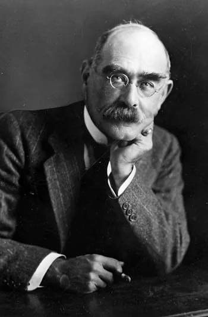
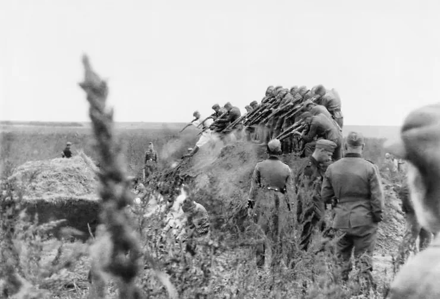
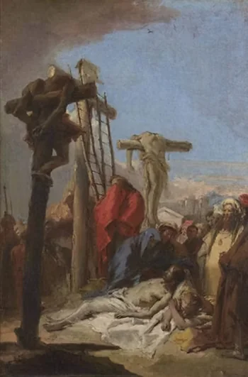

Every November, Canadians wear the poppy, gather at cenotaphs, and repeat three solemn words: “Lest We Forget.” Yet what exactly are we supposed to remember?
The lives lost? The families who never welcomed their loved ones home? The horror of war? Certainly. But there is another question that must not be pushed aside: what was the cause for which those lives were laid down?
My original article, written in November 2021, challenged readers to distinguish between honouring a sacrifice and approving the authority under which it was made. That challenge still matters. To honour the dead seriously, we must be willing to examine questions of truth, justice, and righteousness.

“A sacrifice is not made righteous simply because a government calls it patriotic.”
— The central question of this reflectionWhat Does “Lest We Forget” Mean?
In ordinary English, lest we forget means “so that we do not forget.” It is an appeal to preserve a memory that must not disappear.
On Remembrance Day in Canada, the expression is closely associated with honouring those who served and died in war. November 11 marks the armistice that ended the fighting in the First World War in 1918, and today is an occasion for reflection on military service, sacrifice, and the cost of war.
But memory is more than an inventory of losses. A serious act of remembrance asks what happened, why it happened, and what moral lessons ought to be carried forward.
Is “Lest We Forget” in the Bible?
Yes, the warning against forgetting is explicitly biblical. The familiar English wording appears in biblical passages such as Deuteronomy 4:9, which tells Israel to guard against forgetting what its eyes had seen and to teach the next generations.
More directly, Deuteronomy 6:12 warns:
“Then beware lest thou forget the LORD, which brought thee forth out of the land of Egypt, from the house of bondage.”
Deuteronomy 6:12 · King James VersionMoses was addressing Israel, a people delivered from slavery and bound by covenant to the Lord. He called them to remember both the Lord's mercy and their obligation to obey Him.
Read Deuteronomy 4, 6, and 8 together. The danger was not merely losing track of an event in the past. It was forgetting the God who had acted, becoming proud of their strength, and treating His commandments as though they no longer mattered.
The modern Remembrance Day slogan is not a quotation of a complete verse, and its public use has developed its own history. Yet its familiar wording and moral warning have a well-documented connection to Scripture.
The Origin of “Lest We Forget”: Rudyard Kipling’s Recessional
The phrase became especially prominent through Rudyard Kipling's poem Recessional, published in July 1897 following Queen Victoria's Diamond Jubilee.

Kipling wrote at a time when Britain's imperial and naval power seemed extraordinary. Instead of merely celebrating that power, the poem warned against trusting in human might and forgetting the Lord.
“Lord God of Hosts, be with us yet,
Lest we forget—lest we forget!”
The poem points to the ancient cities of Nineveh and Tyre as reminders that even seemingly mighty powers may vanish. Kipling's refrain is not just a plea to remember dead soldiers. It is a prayer that a proud nation would not forget God.
The Kipling Society's commentary on Recessional specifically connects the refrain with Deuteronomy 6:12. The poem was written before the First World War, although the words later took on a powerful life in public acts of remembrance.
This history matters. When we repeat the expression without knowing its biblical echo, we can overlook a warning about pride, national power, and moral accountability.
Does Remembering a Soldier Mean Endorsing the Cause?
Not necessarily. A soldier may display loyalty, courage, and self-sacrifice while serving a cause that should be questioned. Equally, we can grieve a human death without saying that every action of the government directing that soldier was right.
Consider the Second World War. It would be morally incoherent to treat the Nazi regime's campaign of extermination as equivalent to the Allied struggle against it simply because people on both sides fought, followed orders, and died.

The comparison makes a particular point: bravery and obedience alone cannot determine whether a cause is just. The moral character of the cause must be examined.
That does not require us to despise individual soldiers, deny the complexity of wartime circumstances, or ignore the grief of their families. It requires us to distinguish compassion for persons from approval of actions or institutions.
Government Authority and the Christian Conscience
Christianity does not teach that every act of civil government is evil. Romans 13:1–7 calls believers to respect governing authorities. Civil order, justice, and lawful authority matter.
But the state is not God. When human commands contradict the Lord's commands, the apostles say in Acts 5:29 that obedience to God comes first.
In 2021, disputes over COVID-19 restrictions and vaccine mandates prompted arguments about whether serving one's country meant complying with whatever lawful public-health direction the government issued. People disagreed sharply about the justice, necessity, and proportionality of those rules.
That historical disagreement should not be confused with the atrocities of Nazi Germany. The more general moral question, however, remains important: is a government decision righteous simply because it has legal authority behind it?
Scripture calls Christians to consider such questions with humility and a conscience instructed by God's Word—not reflexive obedience to every policy, and not reflexive rebellion against every law.
The Greatest Sacrifice: Why Jesus Christ Died
The Christian faith directs us to a sacrifice greater than any sacrifice made in war: the death of Jesus Christ for sinners.
To remember the cross rightly, we must remember why Christ died. His death is not merely an inspiring example of courage. It is the saving work of the Son of God.

Isaiah 53 teaches that the suffering Servant bears the sins of others. Psalm 22 describes profound suffering. Romans 5:8 declares that Christ died for us while we were sinners.
If we remove sin, justice, mercy, and the purpose of redemption from the cross, we misunderstand the very sacrifice we claim to honour. The sacrifice and its purpose belong together.
The cross is unique and cannot be reduced to a comparison with military service. Yet the principle still exposes how shallow remembrance can become when we praise sacrifice but refuse to consider its meaning.
What Happens When a Nation Forgets God?
The warning of Deuteronomy is first given to covenant Israel; the promises and judgments of that covenant should not be mechanically applied to modern Canada. Even so, Scripture's warnings against pride, injustice, and idolatry offer a moral lesson for peoples and rulers in every age.
Power is not holiness. Wealth is not righteousness. And patriotic language cannot make injustice good.
The prophet Isaiah 5:20 warns against calling evil good and good evil. That is a warning worth remembering whenever politics, fear, or national pride threatens to replace moral judgment.
In Recessional, Kipling's warning is not that a particular empire must last forever. It is that empires are fleeting, while human beings are accountable before the Lord.
Lest We Forget—But What Must We Remember?
On Remembrance Day, remember those who died. Remember the wounded, the grieving, and the cost borne by families and communities. Remember the horror of war, so that it is never treated lightly.
But do not let memory become unthinking loyalty to the state. Ask whether the cause was right. Ask what principles were being defended. Ask whether our public language of sacrifice has become disconnected from justice and truth.
Above all, consider the warning that echoes from Deuteronomy into Kipling's Recessional: do not grow proud of human greatness while forgetting the Lord.
Remember the fallen.
Remember the cause.
And above all, remember the Lord.
Common Questions About “Lest We Forget”
Where does the phrase “Lest We Forget” come from?
The wording has roots in the language of Scripture, while its famous public refrain comes from Rudyard Kipling's 1897 poem Recessional. Its use in Remembrance Day ceremonies developed in a later historical setting.
Which Bible verse says “lest we forget”?
Deuteronomy 4:9 warns against forgetting what God had shown Israel. Deuteronomy 6:12—“Then beware lest thou forget the LORD”—is the passage specifically connected with Kipling's refrain.
Is “Lest We Forget” a Christian saying?
The words have biblical resonance and were used as an explicitly God-directed warning in Kipling's poem. Today, they are also widely used as a civic expression of remembrance by people of many beliefs.
Sources and Further Reading
Editor's note: This article was originally written in November 2021 and substantially revised for clarity, historical context, and Scripture references in November 2026. It is an explicitly Christian reflection on the moral meaning of remembrance.